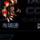

與 Giant 相比裝甲較弱，但速度極快，可裝備隱形，使用劍類武器。
| 名稱 | 說明 |
|---|---|
| 隱形裝置 | 隱形 |
| 名稱 | 技術等級 | 攻擊力 | 射程 | 射速 | 攻擊模式 |
|---|---|---|---|---|---|
| Flash Saber | 1 | 120 | 5.0m | 1.0s | 僅對地 |
| Sparkle Saber | 64 | 145 | 5.0m | 1.0s | 僅對地 |
| Ray Saber | 81 | 165 | 5.0m | 0.9s | 僅對地 |
| Glimmer Saber | 91 | 190 | 5.0m | 0.9s | 僅對地 |
| Glow Saber | 105 | 230 | 5.0m | 0.9s | 僅對地 |
| Saber Mirage | 121 | 265 | 5.0m | 0.8s | 僅對地 |
| Quantum Mirage | 136 | 293 | 5.0m | 0.8s | 僅對地 |
資料來源：Ever☆Zone Tistory /115